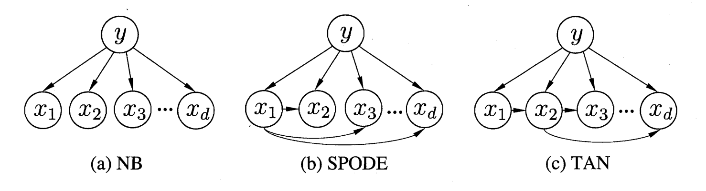
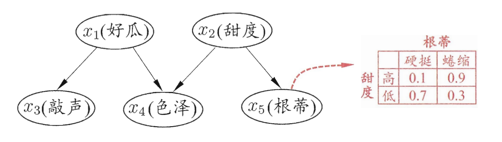
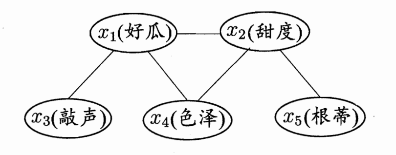
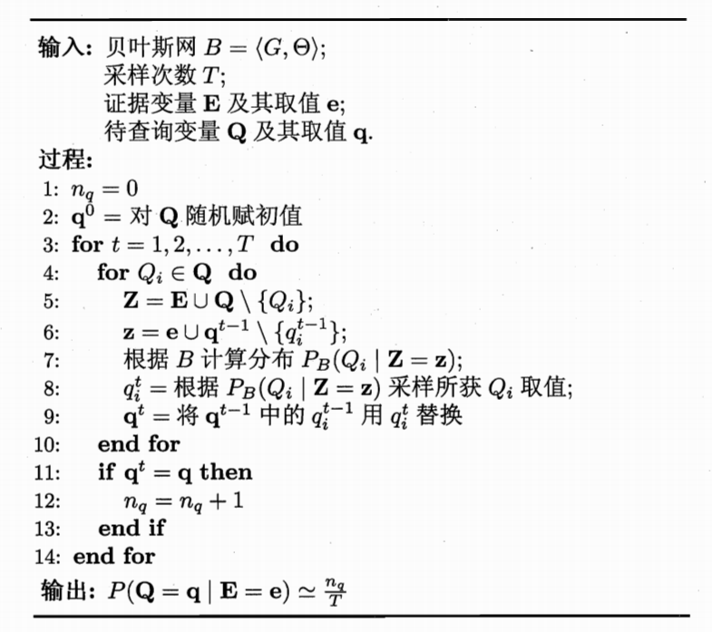

贝叶斯分类器
贝叶斯分类器，概率框架下…
贝叶斯决策论
定义一个多分类问题上的条件风险：
$$
R(c_i|x) = \sum_{j=1}^N \lambda_{ij}P(c_j|x)
$$
此式子的含义是，将$x$分错类的损失（本来是$c_i$类）是$x$为每一个类别的概率乘以权重的和，如果是想要最小化分类错误率，则当$i=j$时，$\lambda_{ij}=0$，其他情况下为1。此时的条件风险可以简化为：
$$
R(c|x) = 1-P(c|x)
$$
即条件风险为1-把$x$分对类的概率。这样我们的优化目标是最小化条件风险，那么就是$h^*(x) = arg , max P(c|x)$。那任务就转化为更准确估计$P(c|x)$后验概率（给出了相关证据和数据后的条件概率）。有两种方式：
- 判别式模型：直接建模$P(c|x)$，如决策树，BP神经网络，支持向量机等
- 生成式模型：先给出联合概率分布$P(c,x) = \frac {P(c)P(x|c)}{P(x)}$，其中分母是归一化因子[1]，给定样本后其和标记无关，因此可以略了，考虑最大化分母，分母中$P(c)$可以通过大数定理频率计算得出，而$P(x|c)$表达的是在c类别(这里c是所有类别的意思)中$x$出现的概率。但并不好计算，因为类别很多且有些类别可能还不出现。
极大似然估计
概率论中的概念，假设$P(x|c)$具有确定的形式且被参数向量$\theta_c$唯一确定，那我们的任务就转变为通过训练集估计参数$\theta_c$，参数估计有两种不同的解决方案：
- 贝叶斯学派：参数本身也有分布
- 频率主义学派：参数未知但固定——极大似然估计法
$$
LL(\theta_c) = log , P(D_c|\theta_c) = \sum_{x \in D_c} log,P(x|\theta_c)
$$
最后是需要找到使得这个表达式最大的参数$\theta_c$的值，但因为提前假设了分布，如果这个猜测不准确的话，对估计的准确度影响很大。
朴素贝叶斯分类器
在贝叶斯策论中提到$P(x|c)$不方便计算，原因是要考虑在某一个分类下一个样本出现的概率它是对所有特征的联合考虑，很难从有限的样本中估计得来[2]。但朴素贝叶斯分类器考虑”属性条件独立性假设“：对已知类别，假设所有属性相互独立，换言之，假设贝格属性独立地对分类结果发生影响。基于这个假设，可写出贝叶斯判定准则：
$$
h_{nb}(x) = \underset{c \in y}{arg , max} , P(c)\prod_{i=1}^dP(x_i|c)
$$
如果在一个类别$c$中某个属性$x_i$没有出现过呢？这里放0的话，会导致连乘式子整个为0，这是不符合直觉的。因此我们使用平滑(smoothing)，常用”拉普拉斯修正“：
$$
\hat {P}(c) = \frac {|D_c|+1}{|D|+1}
$$
在使用方式上也有多种：
- 提前计算出所有的概率估值
- 更新频繁的使用”懒惰学习“(lazy learning)，用的时候再算
- 数据不断增加，支队新增的样本的属性值和涉及的概率估计量做修正，实现增量学习(ART对抗网络)
半朴素贝叶斯分类器
前面的贝叶斯分类器假设了所有属性相互独立，但实际中这样的情况是很少出现的，这里的半朴素贝叶斯分类器就是有考虑特征之间的关联，有以下几种处理方式：
独依赖估计(ODE)：假设每个属性都最多依赖于一个父属性。
SPODE(Super-Parent ODE)：如何找父属性？这里可以对所有属性找一个共同的父属性，即”超父“
TAN(Tree Augmented naive Bayes)基于最大带权生产树[3]，保留了强相关属性之间的依赖性[4]：
计算任意两个属性间的条件互信息：
$$
I(x_i,x_j|y) = \sum_{x_i,x_j;c \in y} P(x_i,x_j|c) log \frac {P(x_i,x_j|c)}{P(x_i|c)P(x_j|c)}
$$以属性为结点构建完全图，任意两个节点之间边的权重设为上述的条件互信息
构建完全图[5]的最大带权生成树，挑选根变量，边置为有向
加入类别节点y，增加从y到属性的有向边
AODE(Averaged One-Dependent Estimator)：将每个属性作为超类来构建SPODE，然后将有足够训练数据支撑的SPODE集成起来作为最终结果（有集成学习的思想在这里，同时”有足够训练数据支撑“代表它会对参与训练的数据数量做一个阈值过滤）
$$
P(c|x) \Rightarrow \sum_{i=1, |D_{x_i}|\geq m’}^d p(c,x_i) \prod_{j=1}^d P(x_j|c,x_i)
$$
数量的过滤就可以从公式的$|D_{x_i}|\geq m’$看出来啦，同时为了规避0样本数的出现，也需要smoothing：
$$
\hat P(c,x_i) = \frac {|D_{c,{x_i}}|+1}{|D|+N \times N_i}
$$$$
\hat P(x_j|c,x_i) = \frac {|D_{c,x_i,x_j}|+1}{|D_{c,x_i}|+N_j}
$$这里面的$N$是指$D$中可能的类别数，$N_i$是第i个属性可能的取值数。
贝叶斯网
也叫”信念网“，借助于”有向无环图“来刻画属性间的依赖关系，使用条件概率表(CPT)来描述属性的联合概率分布。
因此一个贝叶斯网$B=<G, \Theta>$，其中$G$表达的是图的拓扑结构，而$\Theta$表达的是图中节点关系，节点其实就是属性，关系就是一组条件概率表，为子属性的每一个种类在父属性的每一个种类下的条件概率。如下图所示：
结构
贝叶斯网描述了不同特征之间的联系，那我们如何用它来刻画之前难以确定的”部分属性联合“呢？答案就是根据边的连接关系来分离，我们只认为直接相连的属性有联系，间接相连的是独立的（可能说法有误，其实也是间接联系），由此得到多个属性的联合概率分布：
$$
P_B(x_1,x_2,…,x_d) = \prod_{i=1}^d P_B(x_i|\pi_i) = \prod_{i=1}^d \Theta_{x_i|\pi_i}
$$
如上图的西瓜问题的几个属性的联合概率分布就是：
$$
P(x_1,x_2,x_3,x_3,x_4,x_5)=P(x_1)P(x_2)P(x_3|x_1)P(x_4|x_1,x_2)P(x_5|x_2)
$$
具体从图中可以归纳出三种结构：
- 同父结构：如果$x_1$确定，那么$x_3,x_4$就相互独立
- 顺序结构：同理，如果$x$定了的话
- V型结构：$x_4$确定的话，上面的父亲不能相互独立，儿子随机的话倒是相互独立（证明见书P158），称作”边际独立性“
为了更方便分析里面的独立关系，我们使用”有向分离“：
- 找出V型结构，将两个父亲用无向线连起来
- 全部化为无向
其实这里主要目的就是将V型不能确定一个独立两个这个特定固定下来（毕竟儿子不能真随便呀），而另外两个结构其实含义一样，那就可以不用箭头了，变成了”道德图“😄（这名字很神奇）
学习
学习就需要一个归纳偏好，这里给出的是”评分函数“（信息论准则，”最小描述长度“[6]）：
$$
min , s(B|D)=f(\theta)|B|-LL(B|D)
$$
其中$|B|$表示参数个数，$f(\theta)$表示参数编码长度，右边是对数似然，表征了概率分布对D描述的好坏程度。
- $f(\theta)=1$：AIC
- $f(\theta)=0$：退化为负对数似然
- $f(\theta)= \frac 12logm$：BIC
由于在参数格式确定时，左边是固定的，同时似然函数的各个经验概率也可计算，因此变成了一个对所有网络结构的遍历过程，这个是NP问题，有两种策略可以”放松“条件：
- 贪心：从初始网络出发，做调整一条值直到不能再低
- 对网络结构做限制，如只要树结构等
推断
推断就是用一些特征（证据）来得到另一些特征出现的概率。直接用联合概率分布是NP问题，这里采用”吉布斯采样“。它使用的是一种在子空间”随机漫步“的采样，即”马尔可夫链“[7]，基于证据的特征，每一步改变一下，经过t次采样后后计算此时打中”推断“所占的比例，就是这个条件概率。理论依据在于马尔可夫链第t步状态在步数无穷大的时候会收敛于一个平稳分布，我们就是要让他平稳，然后得到这个分布。
缺点：收敛慢，极端情况不保证平稳收敛。
EM算法
前面都假设的每个属性的每个特征都有样本可以观测，那如果没有对应的样本(即隐变量)应该怎么处理呢？（和之前smoothing想要解决的问题类似[8]）这里使用EM算法(Expectation-Maximization)，其思想是先确定$\Theta$来估计$Z$隐变量的分布，表达出$\Theta$的极大似然估计式子，再对这个式子最大化来得到新的一个$\Theta$，如此迭代运算最终收敛于最优解，是一种非梯度优化方法。
后续扩展
[1] 归一化
[2] 如我们判断在好瓜的条件下，$x$样本={$x_1$=1,$x_2$=0,…,$x_n$=1}的概率，借助大样本中出现的频率作为概率的话，我们需要找和$x$特征值完全相符的来计算，但是很多情况下特征值很多其组合可能大于样本数，那么很可能根本找不到这个一样的，更别说这样的估计看起来就很不准确，因此这里被这个联合概率击败
[3] 最大带权生成树🌲
[4] 是指有向边代表了其父属性关系是8
[5] 完全图定义补充
[6] 为什么喜欢短的呀
[7] 马尔可夫链14章
[8] 但我感觉前面是有用过smoothing的呀